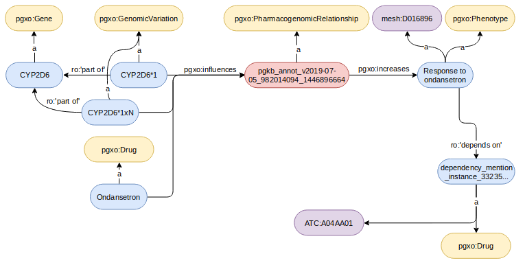
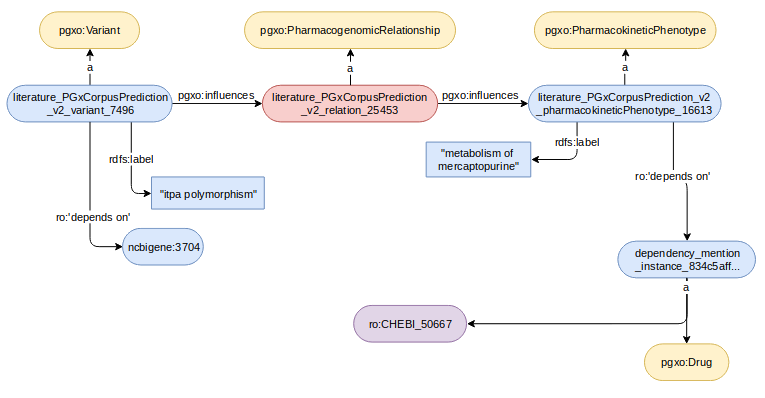
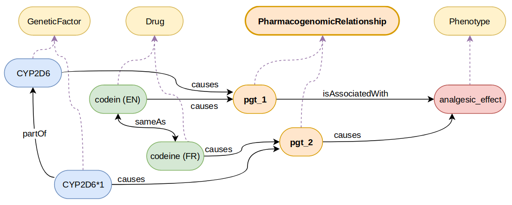
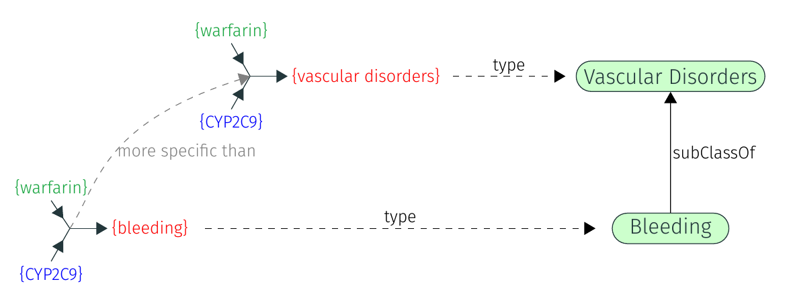

Task: The Pharmacogenomics Track (or PGx Track for short) involves n-ary tuples representing so-called "pharmacogenomic relationships" and their components of three distinct types: drugs, genetic factors, and phenotypes. Tuples are reified as instances of the class pgxo:PharmacogenomicRelationship. The goal of the track is to match these tuples (instance matching).
Motivation: Pharmacogenomic tuples involve drugs, genetic factors, and phenotypes, and state that patients being treated by the specified drugs while having the specified genetic factors may experience the given phenotypes. Knowledge in pharmacogenomics is scattered across several resources, e.g., reference databases (PharmGKB) or the biomedical literature. Hence, there is a need to build a consolidated view of the knowledge of this domain by aligning tuples from different sources. See [1] for a detailed motivation and [2] for a detailed task description.
The data sets are available on Zenodo. You can either download them for local analysis and processing, or you can directly use the MELT toolkit.
For the evaluation, we use a subset of the alignments available in PGxLOD that have been created with the matching rules described in [3].
Components (drugs, genetic factors, phenotypes) are associated with pharmacogenomic tuples through various properties from the PGxO ontology (e.g. pgxo:isAssociatedWith, pgxo:causes). These properties are organized in a hierarchy, with inverses, and/or symmetry.
Two examples of pharmacogenomic tuples and their encoding are displayed below:


In the following example, the expected alignment is pgt_2 skos:broadMatch pgt_1 (denoted by pgt_2 < pgt_1) since the genetic factor causing pgt_2 is part of the one causing pgt_1, and the phenotype is caused by pgt_2 instead of only being associated with pgt_1.

In the following example, we rely on hierarchies of ontology classes to detect that one tuple is more specific than the other because it involves a more specific phenotype.

Only alignments between instances of the pgxo:PharmacogenomicRelationship class are expected. Four different types of alignments are considered:
[1] Pierre Monnin, Joël Legrand, Graziella Husson, Patrice Ringot, Andon Tchechmedjiev, Clément Jonquet, Amedeo Napoli, Adrien Coulet: PGxO and PGxLOD: a reconciliation of pharmacogenomic knowledge of various provenances, enabling further comparison. BMC Bioinformatics 20-S(4): 139:1-139:16 (2019) [pdf]
[2] Pierre Monnin, Adrien Coulet: Matching pharmacogenomic knowledge: particularities, results, and perspectives. OM@ISWC 2022: 79-83 [pdf]
[3] Pierre Monnin, Miguel Couceiro, Amedeo Napoli, Adrien Coulet: Knowledge-Based Matching of n-ary Tuples. ICCS 2020: 48-56 [pdf]